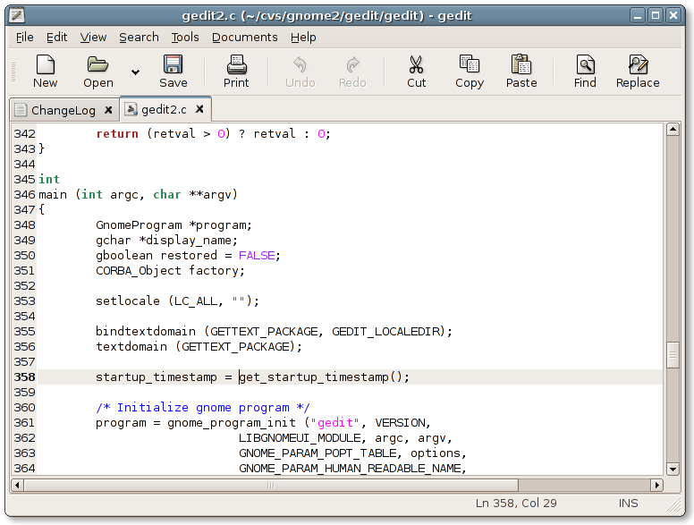

gedit's main window, showing its tabbed multi document interface.
gedit showing its colorful syntax highlighting. 
Navigation
Downloads
The latest releases can always be found at the GNOME ftp site.
Feedback
Bugs should be reported to the GNOME Bug Tracking System
You can contact the developers by sending a mail to the gedit mailing list or joining the #gedit channel on irc.gnome.org